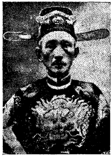

NHÂN-VẬT CẬN-ĐẠI II
NGUYỄN-VĂN-BIỂU
(TỤC GỌI ÔNG PHÒNG-BIỂU, ĐƯỢC NHÂN-DÂN
SA-ĐÉC CAO-LÃNH XƯNG PHỤC TÀI LẠ)
Ông Nguyễn-Văn-Biểu làm chức phòng vệ trong bộ đội kháng Pháp của Thiên-Hộ Vỏ-Duy-Dương nên có tên tục danh là Phòng-Biểu. Đứng trong hàng ngũ nghĩa quân tại Đồng-Tháp, tên tuổi ông vang lừng nơi vùng Cao-Lãnh (tỉnh lỵ Kiến-Phong hiện nay).
Vóc vác ông cao lớn mạnh dạn, nên được chủ tướng chọn làm cận vệ. Suốt thời gian kháng chiến, luôn luôn ông có mặt bên cạnh chủ tướng, được trọng dụng và tin yêu trọn vẹn. Vì ông rất trung thành, dũng cảm, trải bao cơn chiến trận đẫm máu, lúc nào ông cũng tỏ ra là một viên tướng hào hùng dốc lòng hy sinh vì đại nghĩa.
Theo tài liệu của ông Thân Việt (tức ông cử Phan-Văn-Thiết), ông Phòng-Biểu có hai cái tài đặc biệt, trong vùng Cao-Lãnh lắm người được biết:
"Tài thứ nhất của ông là tài ăn... mỗi lần ăn cho đến một sải chè đậu. Chè đậu là thức ăn dễ ngán lắm, ai có giỏi ăn thì cũng vài ba chén là nhiều, thế mà ông ăn cho cả sải. Lấy chén múc chè vào cho đầy rồi sắp hàng dài trên bộ ván (phản) được một sải (có gần ba thước), nghĩa là có đến ba chục chén chè...
"Tra cứu thì dường như ông Phòng-Biểu có cái dạ dày giống như... con lạc đà. Khi theo dưới cờ nghĩa quân của cụ Thiên-Hộ Vỏ-Duy-Dương, nhiều lúc đi công tác đôi ba ngày, ông cũng không hề đem thức ăn theo. Trước khi ra đi ông ăn một nồi cơm to (sức bốn hay năm người ăn mới hết) rồi khi về (tối hay qua ngày sau) mới ăn nữa. Chẳng khác Tiết-Nhân-Quí đời Đường bên Tàu.
"Tài đặc biệt thứ nhì của ông là: đánh gảy tiện một bó mía lau ba chục cây.
"Về chuyện đánh gảy bó mía như sau: Ông bảo đem mía ra bỏ ngoài sân, rồi ông lựa ba chục cây chắc chắn, ngay ngắn, ông góp lại, lấy dây luột bó ba chục cây chắc cứng như một khúc cây nguyên. Dù cho quăng lên cao rớt xuống đất bao nhiêu lần cũng không khi nào sút ra được. Xong rồi, ông kiếm chỗ dựng bó mía ấy cho vững chãi. Đoạn, ông lấy ra cây thước sắt là võ khí trước kia ông dùng đi đánh giặc. Cây thước ấy dài độ một thước rưởi, bề ngang độ bốn phân, bề dày non một phân. Ông cầm cây thước sắt trên tay, lấy bộ đàng hoàng rồi hươi cây thước sắt trên tay, đánh một cái. Cạnh bén của cây thước chặt đứt tiện ngang bó mía, chẳng khác gì con dao bén chặt xuống một sợi roi mây vậy. Không hề khi nào có sót một cây mía nào không đứt tiện cả.
Biểu diễn tài chặt mía ấy cho mọi người xem xong, ông nói:
- Bà con thử nghĩ: Cây thước sắt lợi hại không kém cây thiết bảng của Tề-Thiên-Đại-Thánh, làm sao bọn săn đá Tây chịu nổi. Hễ một cây đánh xuống là chết một tên rồi, chỉ cần là ráng tránh, đừng ở trước mũi súng trường của chúng nó mà thôi. Nhờ Trời Phật độ, trong bọn thời kỳ tôi theo hầu Ngài Thiên-Hộ, không có khi nào ở trong tình trạng ấy.
Với sức mạnh phi thường, lòng dũng cảm tột bậc, thêm ý chí can trường quyết tâm kháng chiến cứu quốc, ông Phòng-Vệ Nguyễn-Văn-Biểu nghiễm nhiên là viên võ tướng lừng danh. Trong các trận đương đầu với quân Pháp, ông luôn luôn xông pha rất gan dạ. Ngọn thước sắt của ông vung đến đâu, quân Pháp vỡ tan đến đó, khiến chúng phải khiếp danh ông.
Mỗi khi nghe đến tên ông Phòng-Biểu, quân lính Pháp đều có ý kiêng dè. Riêng ông, ông cũng khéo léo rất mực trong cơn xung xát kháng địch. Biết người, biết mình, đủ can trường có thừa, mà tự biết võ khí thô sơ, cần phải dè dặt trước súng đạn tối tân, nên với tài thao lược và sự nhanh nhẹn của con nhà tướng, ông vẫn oai hùng chiến thắng.
Nhưng sức người có hạng, việc trời đất không cùng. Ông đã tận tụy với tổ quốc cho đến lúc thời thế đã hết phương xoay chuyển, mới đành ngậm ngùi lui ẩn trong một vùng quê tại Cao-Lãnh.
Ông sống cho đến ngoài 80 tuổi qua đời, chỉ nằm ngủ rồi tắt hơi luôn chớ không có đau ốm gì.
LỄ BỘ THƯỢNG-THƯ
NGUYỄN-ĐĂNG-TAM
NHÂN-VẬT SA-ĐÉC CHIẾM ĐƯỢC
ĐỊA VỊ CAO TRỌNG NƠI TRIỀU-ĐÌNH
Người quê quán tỉnh Sa-Đéc trước kia, ra làm quan tại triều-đình thiết tưởng nên kể đến vị thượng-thư bộ Lễ Nguyễn-Đăng-Tam.


Lễ Bộ Thượng-Thư Nguyễn-Đăng-Tam
Theo tài liệu của hai ông Nguyễn-Văn-Cứng và Nguyễn-Văn-Dần trong quyển "Sa-Đéc nhân-vật chí", Nguyễn-Đăng-Tâm sinh ngày mùng 8 tháng giêng năm Mậu-Thìn (1er février 1867), sinh tại làng Tân-Phú-Đông, tổng An-Trung, tỉnh Sa-Đéc. Về sau, ông ra miền Trung, nhập tịch làng Mỹ-Đức, tổng Thạch-Bàn, huyện Phong-Phú, phủ Quảng-Ninh, tỉnh Quảng-Bình.
Ông nổi tiếng văn học, thông thạo Hán và Pháp-văn. Khi đã tốt nghiệp ra trường, ông được bổ làm giáo-sư dạy tại trường Mỹ-Tho. It lâu, ông xin rời ty giáo-huấn, chuyển qua tùng sự ở Sở Thương-chính. Rồi lại xin chuyển ngạch, làm thông-ngôn ở Tòa-Sứ Trung-Kỳ.
Đến năm 1895, ông lại được Nam triều ban cho hàm Hàn-Lâm-Viện Biên-Tu, Chánh Thất-Phẩm. Cho đến 1911 thì thăng Thái-Thường Tự-Khanh, Chánh Tam-phẩm. Từ đây, trên đường hoạn, cả hai bên Pháp-Việt đều trọng dụng ông. Lớp thì Chính-phủ Pháp ban huy-chương đủ hạng, Nam-triều thì ban Kim-Khánh và Đại-Nam Tứ-Đẳng Long-Bội-Tinh.
Năm 1926, ngày 13 tháng 3, ông nghiễm nhiên là một vị đại-thần, sung chức Thượng-Thư Bộ-Lễ, kiêm Cơ-Mật-Viện Tham-Tá.
Điểm đặc biệt ở ông và đáng khen là chẳng bao giờ ông quên Vĩnh-Long. Sa-Đéc từng là nơi chôn nhau cắt rún. Càng được vinh hiển, ông càng tưởng nhớ nhiều đến Sa-Đéc, mà hằng quay về đây, lưu ý săn sóc đồng bào tỉnh nhà.
Chính ông là ân-nhân của Hội Vĩnh-Long Tương-Tế, giúp cho Hội này làm được nhiều việc công ích, tô điểm cho quyển "Vĩnh-Long nhân-vật chí". Lại giúp cho hai ông Nguyễn-Văn-Cứng và Nguyễn-Văn-Dần soạn thành quyển "Sa-Đéc nhân-vật chí" rất đáng thưởng lắm. Điều nên ghi thêm, về các thứ huy chương mà ông được thưởng, chẳng những của Chính-phủ Pháp, của Nam-triều, mà cả đến Cam-Bốt và Ai-Lao cũng có trao tặng tưởng-lệ ông như sau:
1. Ngày 19 tháng giêng năm...: được Nam-triều thưởng Kim-Khánh hạng nhì.
2. Ngày 7.03.1906: được thưởng Ngân-Bội-Tinh hạng nhì.
3. Ngày 10.12.1907: được thưởng Bội-Tinh của Pháp-Văn Đồng-Minh Hội (Médaille de l'Alliance française).
4. Ngày 10.04.1911: Ngân-Bội-Tinh hạng nhất.
5. Ngày 28.11.1916: Bội-Tinh Vàng hạng nhì.
6. Ngày 31.03.1920: Ngũ-Đẳng Bội-Tinh (Cam-Bốt)
7. Ngày 02.01.1922: Huân-Chương Hàn-Lâm-Viện Pháp
8. Ngày 25.05.1922: Bội-Tinh của nước Lào
9. Ngày 06.02.1923: Đại-Nam Tứ-Đẳng Long-Bội-Tinh
10. Ngày 11.03.1924: Ngũ-Đẳng Bắc-Đẩu Bửu-Tinh
11. Ngày 25.12.1925: Bửu-Tinh của Pháp
12. Ngày 22.01.1926: Kim-Khánh của Pháp
NGUYỄN-ĐĂNG-KHOA
VỊ ĐỐC-PHỦ VĂN-CHƯƠNG VÀ CÓ ĐẠO-ĐỨC
Trong quyển "Sa-Đéc Xưa và Nay" này, ở nhiều chương chúng tôi có trình bày ít nhiều bài thơ của vị Đốc-Phủ-Sứ Nguyễn-Đăng-Khoa. Ấy là nhân-vật lừng-lẩy tiếng tăm trong giới quan-trường, và là người đã làm rạng danh tỉnh Sa-Đéc phần nào.
Ông Nguyễn-Đăng-Khoa sinh năm 1864 tại làng Tân-Qui-Đông, tổng An-Thạnh-Hạ, tỉnh Sa-Đéc. Cuộc đời ông suốt 37 năm lăn lóc trong chính trường, tăm tiếng chẳng những vang dội vùng Vĩnh-Long, Sa-Đéc, mà ngoài Trung, Bắc cũng từng biết danh ông.

Cụ Nguyễn-Đăng-Khoa
Vốn dòng dõi thư hương, ông nối được nghiệp nhà, hoc hành uyên bác, có tài thao-lược, có tâm cơ, tánh tình lại hiền hậu. Xuất thân làm giáo viên, rồi làm Thông-ngôn. Lại được bổ tùng sự tại Tòa Thông-Sứ Bắc-Kỳ Hà-Nội. Trong nhiệm vụ nào, ông cũng tỏ ra thừa khả năng phụng sự.
Đến năm 1903, được thăng Tri-Huyện. Năm 1908, thăng Tri-Phủ. Năm 1916, thăng Đốc-Phủ-Sứ. Từ khi thăng Tri-Phủ và Đốc-Phủ-Sứ, ông đã từng làm Quận-Trưởng, trấn nhậm các nơi:
- Năm 1908, làm Quận-Trưởng Thủ-Đức (Gia-Định)
- Năm 1909, làm Quận-Trưởng Hốc-Môn (Gia-Định)
- Năm 1913, làm Quận-Trưởng Cái-Nhum (Vĩnh-Long)
- Năm 1914, làm Quận-Trưởng Chợ-Lách (Vĩnh-Long)
- Năm 1916, làm Quận-Trưởng Ô-Môn (Cần-Thơ)
- Năm 1920, làm Quận-Trưởng Lai-Vung (Sa-Đéc)
Trấn nhậm quận nào cũng lưu để thành tích tốt, khiến lúc ra đi nhiều người còn thương mến, luyến tiếc. Điều làm vinh diệu cho ông: Triều-đình ban tặng Kim-Khánh, Kim-Tiền; Chính-phủ Pháp, Cam-Bốt cũng tặng đủ thứ huy-chương cho ông.
Ông lại có tâm hồn khoáng đại, thích thú thi họa cầm kỳ. Những lúc rãnh việc quan, ông thường ngâm vịnh làm vui, thi ca được truyền tụng khá nhiều. Ấy cũng là điểm đặc biệt của ông, trong hàng quan lại mà dào dạt nghệ sĩ tính, phong lưu tao nhã, khó có ai hơn ông buổi ấy.
Ông còn giữ được tâm hồn cao quý hơn nữa bằng cách biết trì niệm câu "Công thành danh toại thân nhi thối". Khi làm quan, ông cẩn thận dè lòng, sao không cho hổ tiếng thanh cần liêm chính. Lúc công danh đang phát đạt, thế mà ông biết rút lui, không quá đám mê vì bã lợi danh như bao nhà quyền quý khác. Đã thế ông lại còn hồi đầu hướng thiện, phát tâm tu niệm rất sốt sắng, thật là phẩm hạnh thanh cao.
Khi ông qui y đầu Phật, rữa sạch trần tâm, ông cũng rất mực tín thành, trì chí chay lòng, chán ngán những khi bôn ba vòng tục lụy.
Ông có bài thơ tỏ chí khí, phát bồ-đề tâm mến cảnh thiền:
Thế sự thôi thôi nghĩ ngán ngầm,
Đã đành tụng lấy kệ Quan-Âm.
Then trời máy tạo đang nhen nhúm,
Lữa bá lòng vương bỏ nính hâm.
Ngày cởi xe mây dầu khiển hứng,
Tối nhoi đèn nguyệt mặc ca ngâm.
Công danh rày đã toan lòng bẽ,
Bước thử Bồng-lai thử mấy tầm.
NGUYỄN ĐĂNG TRƯỜNG
Trong hàng mô phạm lão thành có tiếng tăm nhất ở Vĩnh-Long, Sa-Đéc ngày trước đáng kể nhất có cụ Nguyễn-Đăng-Trường. Ông sinh năm 1862, tại làng Tân-Qui-Đông, tổng An-Thạnh-Hạ, tỉnh Sa-Đéc.

Cụ Nguyễn-Đăng-Trường
Sớm biết theo trào lưu mới, ông bắt đầu họp Pháp-văn nơi trường tỉnh Vĩnh-Long từ năm 1877. Sau 5 năm, ông thi đậu ra trường, được bổ chức giáo tập, dạy tại trường tỉnh Gia-Định vào năm 1882. Rồi lần lượt đổi về dạy tại trường Vĩnh-Long, Sa-Đéc.
Siêng năng mẫn tiệp, tận tụy với chức vụ đào luyện đám hậu tiến, ông lần thăng Đốc-Học, rồi làm Thanh-Tra các trường trong tỉnh Sa-Đéc.
Suốt 20 năm phục vụ trong ngành giáo-huấn, đến năm 1922 ông về hưu dưỡng lão.
Trong năm 1919, ông đã được hưởng thọ hàm Tri-huyện, nên tục gọi là ông Đốc-Học Trường, hoặc ông Huyện Trường. Thân danh ông vang dội xa gần. Kể về huy-chương ông được trao tặng, có hai huy-chương giá trị:
1 - Ngày 1-5-1908, được thưởng Giáo-Dục Ngân-Bội-Tinh.
2 - Ngày 10-8-1924, được thưởng Khuê-Bài Hàn-Lâm-Viện Pháp.
Ông là nhà mô phạm lão thành, danh giá thế phiệt. Chẳng những tiếng tăm ông làm đẹp cho tỉnh nhà Vĩnh-Long và Sa-Đéc mà nhiều nơi cũng đều nghe biết. Hàn môn sanh do ông đào luyện, được thành đạt kể có hàng trăm nhà tai mắt thượng lưu trong xã hội về sau. Như quý ông Bác-vật Lưu-Văn-Lang, Bác-vật Lương-Văn-Mỹ, Bác-sĩ Lê-Quang-Trinh, Tiến-sĩ Nguyễn-Thành-Giung, hai ông Chánh-án Nguyễn-Xuân-Quan và Nguyễn-Xuân-Giác, các vị Tri-phủ Nguyễn-Xuân-Hiển, Lê-Bá-Trang, Trương-Minh-Giảng, Lê-Quang-Tường, Ninh-Quang-Hiến v.v... Khắp trong chính-trường, giáo-giới, làng văn, làng báo, đâu đâu cũng có môn sanh ưu tú của ông góp mặt.
Ngày ông về hưu, các môn sanh của ông từ khắp bốn phương kéo nhau về Sa-Đéc thiết tiệc long trọng, tỏ lòng nhớ ơn ông đã tác thành nhiều lớp, rày đã nên danh phận với đời.
Ông Hòa-Trai Nguyễn-Văn-Dần, tác giả "Sa-Đéc nhân-vật chí" vốn cũng là một môn sanh ưu tú của ông, khi ấy có thơ cảm niệm:
Công ân giáo dục thuở nào khuây,
Nhờ có tôn sư khéo chỉ bày.
Luân-lý đường xưa chăm dắt diếm,
Văn tay cận đại sức mình gầy.
Quân sư đôi chữ ngàn thu để,
Tước lộc như ai cũng bởi tay.
Cái nợ ba sinh toan bào bổ,
Kính dâng trường thọ chúc mừng thầy.